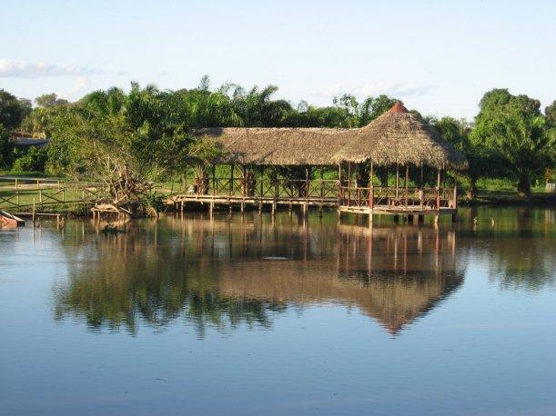

"NO TE VAS A QUERER IR"


Laguna de Quistococha

El Complejo Turístico de Quistococha, también conocido como Parque Turístico de Quistococha, es un complejo de entretenimiento en la Ciudad de Iquitos, Perú. Ubicado en la región sureña de Iquitos Metropolitano, es el único parque turístico del Departamento de Loreto y está considerada oficialmente como un «Parque Turístico Nacional» dentro el Sistema de Reservas Turísticas Nacionales del Perú.1 El complejo está contiguo a la Ruta Departamental LO-103 y es un notable atractivo turístico para el dinamismo de Iquitos.
El complejo ocupa un espacio de 369 hectáreas de bosque amazónico, y abraza a la Laguna Quistococha.1 Contiene una playa artificial de arena blanca denominada Tunchi Playa.1 Además, está rodeado por una vegetación compuesta principalmente por palmeras de aguaje, de «gran homogeneidad y tamaño dominante».
El lugar también es usado para importantes trabajos de investigación, conservación y reforestación. Alberga un museo, un zoológico y un vivero natural.1 El museo comprende una colección de taxidermia de la fauna amazónica; el zoológico acoge a varios animales como mamíferos, aves, reptiles, anfibios y peces.1 Por último, en el vívero se realiza trabajos de reforestación y jardinería botánica.
Perfil del Autor
El agente de viajes es probablemente, hasta nuestros días, el elemento más importante en la cadena de suministro de la industria de viajes; y decimos “probablemente” porque la tecnología ha venido a desplazar de manera significativa su labor.